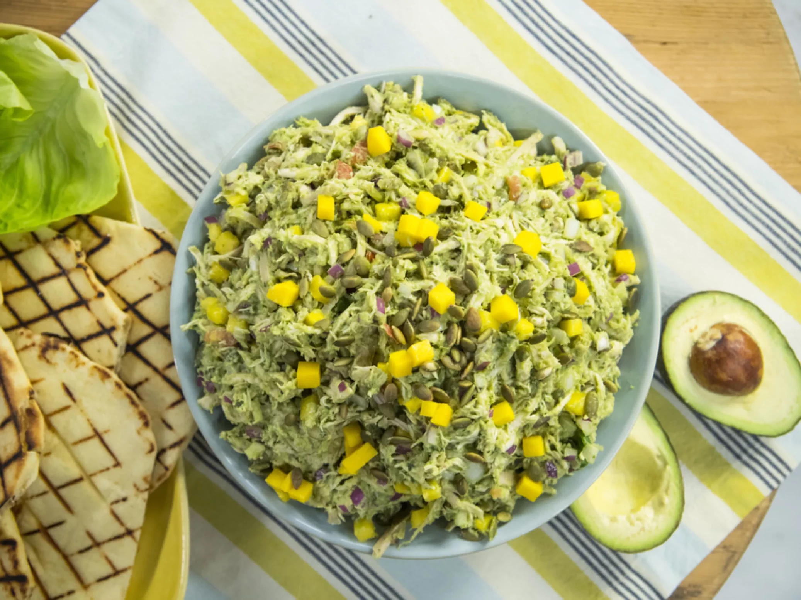

Guacamole Chicken Salad

Description
Best served al fresco on a hot summer's eve.
Ingredients
- 3 cups shredded rotisserie chicken
- 1 cup store-bought refrigerated guacamole
Steps
- Combine the chicken, guacamole, mango, onion, pepitas, lime juice and pesto in a mixing bowl, then season to taste with salt and pepper. Serve with lettuce leaves or flatbread for easy eating.